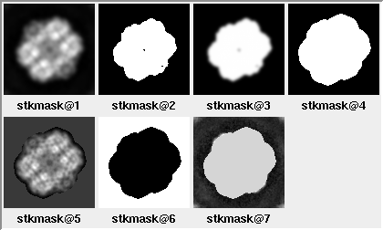
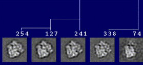
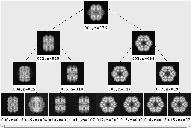
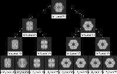
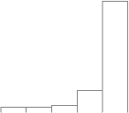

Multivariate Data Analysis
Previously known as multivariate statistical analysis
There are only three essential steps here, and the second one is even optional:
For the classification below to be sensible, the images will need to have been aligned. The alignment step here is optional if the images have been aligned already.
The dimension-reduction step is even optional, in theory. In principle, one could classify the raw images (which is what SPIDER operation 'AP C' does). As an example here, I'm using correspondence analysis for the dimension-reduction. A similar method is principal-component analysis (PCA); to run PCA, one needs to change an option under SPIDER operation 'CA S' (here, in the procedure file ca-pca.msa).
For classification, there are three methods illustrated here: Diday's method, Ward's method, and K-means. The individual classification operations are described in more depth in the classification tutorial.
Getting started
Quick version
This quick version is here partly for simplicity, and partly for legacy reasons. The more complete and more up-to-date workflow is presented below.
The overall inputs are simply:For negatively-stained images, it is often the case that the puddle of stain surrounding the particles
dominates the classification (although maybe not the case for deep-stained specimens).
In this case, it may be helpful to high-pass filter the images using a filter radius
larger than the size of your particle. If you cut off too much of the low-frequency information
however, the aligning power of the images will be lost. You may need to tweak the radii.
Conceptually, this alignment first aligns pairs of images and averages them. Then, it aligns pairs of averages of those pairs and averages them, and so forth. This type of alignment appears to be less random than does 'AP SR', which chooses seed images as alignment references.
Reference: Marco S, Chagoyen M, de la Fraga LG, Carazo JM, Carrascosa JL (1996) Ultramicroscopy 66: 5-10.
There may to be a memory limit in 'AP SR'. If you get a core dump, truncate the selection file and try again.
The low-pass filtration step will make the particles easier to visualize. The downsampling will speed up the computation.
 |
To switch to PCA (or iterative PCA), change the register x28 in ca-pca.msa to 2 (PCA) or 3 (iterative PCA).
After running, examine the eigenimages and decide which ones to use. Typically all but the first few are noisy. If not, increase the number of eigenfactors to calculate, and re-run this PROCEDURE FILE.
|
factor 1 vs. 2 |
eigenvalue histogram |
eigenimages |
reconstituted images |
worm |
||||
ribosome |
K-means classification, using
'CL KM'
The advantage of K-means is that it is simple,
requiring primarily the number of classes to divide the particles into.
The simplicity is also the disadvantage;
there is no relation between the classes generated,
in contrast to the hierarchical methods below.
It can be informative to look at the individual particles from a class.
You can use
WEB/
JWEB, or
montagefromdoc.
Usage:
montagefromdoc KMeans/docclass001.dat
If you have requested too many classes, there will be
similar-looking class averages.
If you have requested too few, there will be dissimilar
particles within a class.
After running, decide how many classes to use. The PostScript file may be highly branched, and nodes may be unreadable.
|
 |
Visualize binary tree

 |
After running, decide how many classes to include. using WEB/ JWEB (Commands -> Dendrogram) and clicking on Show averaged images.
 |
Full version
This full version is the 2D alignment scheme which I use routinely. It is a subset of the steps for alignment and classification for untilted-specimen images for random conical tilt.
[Recommended] Generate parameter file
If using SPIRE, a parameter doc file will be generated upon starting a project. While not strictly required, without this file, you will need to remember to check for these frequently-used parameters each time.
If not using SPIRE, run makeparams.msa, which will generate params, a doc file containing the reconstruction parameters.
Not all 20 parameters are used, so here are the key values:| ¤ | 5: | pixel size, in Angstroms. |
| ¤ | 17: | window size, in pixels. |
| ¤ | 18: | particle diameter, in pixels. |
Alternatively, you can copy and modify this file from elsewhere. An example file called bak-params is present in the tarball.
Prepare particle stack.
The following procedures will expect particle images in the form of a single stack, plus a doc file with a list of particles. If your images are not in this form, we present two methods to generate them:
Combine unstacked images.
By default, the procedure win2stack.msa assumes that the input unstacked images are of the form Particles/win*****. Edit as necessary.
Also, enter the highest particle number that you wish to import. The procedure will look for the existence of particles up until this number.
Concatenate a set of sets into one stack.
The procedure combinestacks.msa will look for the presence of a series of stack files, such as Particles/winser_*****. Programs such as e2boxer.py, for example, may generate a stack of images per micrograph.
Also, enter the stack particle number that you wish to import. The procedure will look for the existence of stacks up until this number.
| ¤ | listparticles: | A list of windowed particles. |
| ¤ | stk2-unaligned: | Single particle stack. |
| ¤ | stk1-unaligned_backup: | Generated in case high-pass filtration needs to be repeated. |
[Recommended for negatively-stained images] High-pass filter windowed images
For negatively-stained images, it is often the case that the puddle of stain surrounding the particles dominates the classification (although maybe not the case for deep-stained specimens). In this case, it may be helpful to high-pass filter the images using a filter radius larger than the size of your particle. If you cut off too much of the low-frequency information however, the aligning power of the images will be lost. You may need to tweak the radii.
If you are unsure whether to do these steps, feel free to skip them, but be sure to look at the reconstituted images when you run ca-pca.msa in order to see if the stain is the predominant source of variation.
The PROCEDURE FILE highpass.msa reads the stack stk1-unaligned_backup and generates:
| ¤ | stk2-unaligned: | High-pass filtered untilted-specimen image stack (overwrites previous version). |
Align the untilted-specimen particles using reference-free alignment.
Before running classification, the particles will first be run through reference-free alignment. Even if there are different views of particles (orientation or conformation), the idea is that these different classes of particles will align consistently with the type of particle to which it is aligned.
There are a few different implementations of reference-free alignment, such as 'AP SR'. The procedure file used here, pairwise.msa, uses an algorithm called the "pyramidal system for prealignment construction." For more information, see the quick version above.
Briefly, pairwise.msa takes the first two images from the stack stk2-winrot, aligns them, and averages them. In the next iteration, it will align pairs of averages, and then average them, and so forth. This type of alignment appears to be less random than does 'AP SR', which chooses seed images as alignment references.
Outputs:| ¤ | Pairwise/stkcentavg: | Stack of centered intermediate averages, with circles overlain.
See note about centering on the alignment parameters page. |
| ¤ | stk3-aligned: | Aligned untilted-specimen image stack.
This stack will be overwritten with subsequent alignments. |
| ¤ | Pairwise/stkaligned: | Copy of aligned untilted-specimen image stack,
retained locally to the Pairwise/ directory. |
| ¤ | Pairwise/rfreeavg001: | Final average of all images. |
| ¤ | Pairwise/docalign: | Alignment doc file. |
Low-pass filter and shrink the aligned particles.
| ¤ | stkfiltered: | Low-pass, shrunken filtered image stack. |
The default parameters are hopefully reasonable.
To view the output filtered images, type:
montagefromdoc listparticles.spi stkfiltered.spi
Adjust the filtration parameters as necessary, and re-run.
Run multivariate statistical analysis (MSA) on filtered images.
The procedure file ca-pca.msa runs correspondence analysis (CA) or principal component analysis (PCA) or iterative PCA (IPCA). In principle, one can classify the image stack stkfiltered without running MSA, but here we will be using it.
What this means, briefly, is that systematic variations are reduced into an arbitrary number of factors (e.g., 25 used here); in this case, the factors can be expressed as images, or "eigenimages." Each image can be reconstituted as the sum of these eigenimages, when using the proper weights. How CA and PCA differ is in the way these weights are calculated. The "importance" of each factor is the percent variation that is accounted for. The eigenimages of lower importance typically correspond to noise. Thus, an image reconstituted from the strongest eigenimages can be thought of as a type of filtered image, where some contribution of noise has been excluded.
For a more complete description of multivariate statistical analysis (or more accurately, multivariate data analysis), see Chapter 4 in Frank, 2006. For details about the specific SPIDER commands pertaining to MSA, and example outputs, see the classification and clustering tutorial.
Outputs:| ¤ | MSA/eigenimg: | Stack of eigenimages, i.e., images showing systematic correlated variations between pixels.
For more information about eigenimages (and reconstituted images), see the classification and clustering tutorial. |
| ¤ | MSA/reconst: | Stack of images reconstituted using a single factor
Factors can be positive or negative, hence the two versions for each. For more information about reconstituted images (and eigenimages), see the classification and clustering tutorial. |
| ¤ | MSA/ps_eigenvalues.ps: | A PostScript file with a histogram of the percent variation for each factor. |
| ¤ | MSA/cas_IMC: | A text file containing information about each factor and for each image
For more information about the output of 'CA S', see the classification and clustering tutorial. |
| ¤ | MSA/factormapAABB: | PostScript format plots for factor #AA vs. factor #BB (where BB = AA+1)
Clusters are indicative of distinct classes. |
| ¤ | [cas-option]: | Option of CA (option 1), PCA (2), or iterative PCA (3)
One method or another sometimes crashes due to "numerical inaccuracy." I subjectively try CA first, then iterative PCA, then PCA last. |
| ¤ | [num-factors]: | Number of factors to calculate.
If after you run this procedure file, all of the eigenimages look meaningful, then increase this parameter and re-run. |
NOTE: For negatively-stained samples, when looking at the reconstituted images, it may be that the stain distribution is the greatest source of variation. If this is the case, go back to the high-pass filtration step above.
Classify images.
At this step, we willl attempt to separate the images into homogeneous subclasses. There is a tradeoff between homogeneity of the subclasses, and size of the subclasses (which is related to the improvement of signal-to-noise in the class averages). In other words, if too few classes are used, dissimilar classes will be grouped together, and if too many classes are used, class averages will be likely redundant and noisy. Thus, there is some degree of subjectivity involved in the classification.
For any of the classification options presented here, choose the number of factors to use (parameter [numFactors]) based on the appearance of the eigenimages and the strength of the factors (based on the histogram), including those factors that you believe to represent true structural differences. Use of weaker factors will probably not make a appreciable difference, however.
There are three classification options given here. (For hints about the usage of the different methods, see the quick version above.)
To view the particles belonging to each class, refer below to the instructions about verifybyview.
Run hierarchical classification.
This classification method uses SPIDER command 'CL HC'. For a description of the outputs, see the classification and clustering tutorial.
The procedure file hierarchical.msa reads the MSA factor text file MSA/cas_IMC.
Output:| ¤ | Hierarchical/docdendro: | Dendrogram doc file, showing the relatedness between images.
See the classification and clustering tutorial for more details. |
In the previous step, we didn't explicitly assign classes. We simply made the dendrogram, which describes the relatedness of the images. In this step, we will explicitly pare down the dendrogram into classes.
Choose one of:It is somewhat arbitrary where to cut off the dendrogram Hierarchical/docdendro generated above. This procedure file will generate class averages for all depths until a specified cutoff, averaging the image stack stkfiltered. The output class averages are arranged into the format of a binary tree, such that the average is the top-level node, the first two subclasses are at the next depth, the first two classes of each of those two classes are at the next depth, etc. While it becomes straightforward how to draw the tree, the drawback is that information is lost about the height of the branches. That is, the height of the branches in the binary tree does not direct correspond to the actual height of the branch in the dendrogram.
In the procedure file binarytree.msa (which calls averagenode.msa and update_lut.msa), the parameter [end-depth] will call for 2**[end-depth] class averages. It is better to err on the side of too high a depth and display fewer in the next step.
Outputs:| ¤ | Tree/classavg***: | Class average for each node on the binary tree. |
| ¤ | Tree/labeled***: | Class average, labeled with the class number and the number of particles. |
NOTE: The format of SPIDER's dendrogram doc file changed in version 17.13. Previously the top two branches had height 1, whereas now, it's 100. If this procedure file crashes, check the parameter [top-branch].
Instructions for viewing the binary tree are given below, in the section below, on the selection of class averages.
To use this option, run procedure file classavg.msa. This option cuts off the dendrogram dendrodoc at a specific height. The height determines the number of classes into which the dendrogram is pared. The number of classes desired is specified by the parameter [numClasses] in classavg.msa. However, because of the imprecision in how the appropriate height in the dendrogram is searched, the actual number of classes found may not exactly match the desired number of classes.
Outputs:| ¤ | Hierarchical/classavg***: | Class averages. |
| ¤ | Hierarchical/docclass***: | List of particles belonging to each class. |
| ¤ | Hierarchical/listclasses: | Doc file with each information about each class Needed as an input for verifybyview.py (more information below). |
| ¤ | Hierarchical/classvar***: | Class variances. |
Run K-means classification
K-means classification uses the SPIDER command 'CL KM'. In contrast to the other classification options presented here, K-means will generate exactly the number of classes requested. The procedure file kmeans.msa reads MSA/cas_IMC and, in a single step, generates K (parameter [numClasses] in the procedure file) classes from the image stack stkfiltered.
Outputs:| ¤ | Kmeans/docassign: | Doc file of analogous format to dendrograms from the other 2 classification methods. |
| ¤ | Kmeans/classavg***: | Class averages. |
| ¤ | Kmeans/docclass***: | List of particles belonging to each class. |
| ¤ | Kmeans/listclasses: | Doc file with each information about each class
Needed as an input for verifybyview.py (more information below). |
| ¤ | Kmeans/classvar***: | Class variances. |
Clustering using Diday's method
Run hierarchical classification.
The procedure file cluster.msa uses SPIDER command 'CL CLA', which uses Diday's method of moving centers. Like with Ward's method above, this method is hierarchical, reading MSA/cas_IMC.
Outputs:| Cluster/docdendro: | Dendrogram doc file, showing the relatedness between images. See the classification and clustering tutorial for more details. |
With the previous step, analogously to Ward's method above, we didn't explicitly assign classes. We simply made the dendrogram Cluster/docdendro, which describes the relatedness of the images.
In the procedure file classavg.msa, we will explicitly pare down the dendrogram into classes. (I haven't been able to make Diday's method compatible with binarytree.msa, so for now, it's functionally equivalent to K-means.)
NOTE: The default parameter [class-type] in the procedure file is for Ward's hierarchical method, so change that parameter to 2.
Outputs:| ¤ | Cluster/classavg***: | Class averages. |
| ¤ | Cluster/docclass***: | List of particles belonging to each class. |
| ¤ | Cluster/listclasses: | Doc file with each information about each class
Needed as an input for verifybyview.py (more information below). |
| ¤ | Cluster/classvar***: | Class variances. |
It may be informative to see the individual particles that belong to each class. This can be accomplished by using verifybyview.py. There should be a settings file, .verifybyview, present in the tarball. For more details, refer below to the section on viewing the class averages and constituent particles.
Select unique classes
In the next step, we will select class averages to use as references for multireference alignment. The first option applies to the output of binarytree.msa above. The second option applies to all classification options from above, including the output of binarytree.msa.
To view the binary tree, cd Tree and run:
binarytree labeled001.spi 4 goodclasses.spi
The parameter 4 on the command line above specifies the maximum depth displayed of the tree. A depth of 2, in comparison, would display only the combined average plus the two classes corresponding to the first branch in the dendrogram. Unlike the Dendrogram option in WEB, one advantage of binarytree.py is that averages are also shown for the non-terminal branches. A disadvantage is that the height of the branches in the tree are purely relative, and have no bearing to the numerical height of the branch point in the dendrogram (and thus the relatedness of the classes).
As one proceeds down the tree, the number of classes increases, and the number of particles per class decreases. As is the case with classification in general, there is a tradeoff between too big a class, such that dissimilar particles are combined, and too small a class, where the signal-to-noise ratio is low. One strategy for displaying an appropriate depth is the point at which a parent class's subclasses do not look different than the parent class.
Save the selection file with CTRL-s. Further options for the program are described on the MSA page.
The script
binarytree.py
requires that you have
installed SPIDER's python tools.
If you don't have SPIDER's python tools installed,
you can alternatively run tree.msa,
which generates a (large) SPIDER image, Tree/tree*.
To generate a selection file of class averages, cd Tree,
and either categorize the montage of class averages in
WEB or JWEB,
or manually create the selection file interactively in SPIDER using
'DOC CREATE'. The selection file should be called
Tree/goodclasses.
This option can be used for any of the classification schemes described above. It can also be used in conjunction with binarytree.py to view the individual particles that belong to a class.
Open verifybyview.py by typing:
verifybyview Tree if you used the binary-tree option, or
verifybyview Kmeans if you ran K-means classification, or
verifybyview Cluster if you used Diday's clustering method, etc.
| ¤ | Display > reverse order: | Toggling this option will display the averages starting from #1. |
| ¤ | Display > labels > text label: | Change CCC to N for the number of particles in a class. |
ls -a in your toplevel directory),
you will need to adjust the filenames.
In the initial popup window, the values should be:
| ¤ | .spi: | Data extension. Adjust as necessary |
| ¤ | Tree: | Initial directory. |
| ¤ | listclasses: | List of classes. |
| ¤ | classavg***: | Class-average template. |
| ¤ | docclass***.spi: | List of particles belonging to each class. |
| ¤ | Filtered/flt*****.spi: | Filtered-image template. |
| ¤ | goodclasses.spi: | List of selected classes. |
When you click on a class average
(except for the first instance, when a popup menu appears),
a montage of individual particles will appear.
NOTE: There is a limit of how many images that can be displayed in one montage.
Clicking on a class with ~1000 particles will show an error message to the console window.
It is unnecessary to verify individual particles at this time. Instead, simply select the class averages that you wish to use for multireference alignment. Select the classes averages by right-clicking on them. When you are finished, save the selection by going to the File menu and selecting Save selection (or ALT-s).
Run multireference alignment
The procedure file multirefalign.msa takes the class averages classavg*** selected in the previous step in goodclasses, re-centers them, and uses them for multireference alignment. The previously aligned image stack stk3-aligned is used to generate the reference images (the class averages are derived from filtered images which may have been downsampled), and the unaligned image stack stk2-winrot will be aligned to those references.
NOTE: Ensure that the classification method that you used is reflected in the procedure file label [old_class_dir]. If you used K-means, for example, use the directory Kmeans. The default in the procedure file is Tree.
Outputs:| ¤ | Multiref1/stkref: | Stack of reference images used for alignment.
They should resemble full-sized, unfiltered versions of the selected class averages |
| ¤ | Multiref1/docalign: | Alignment parameters
See the documentation for 'AP SH' for an explanation of the doc file. |
| ¤ | Multiref1/selview***: | A list of particles belonging to each class. |
| ¤ | Multiref1/stkcenu: | Aligned untilted-specimen image stack.
This copy is retained locally to the Pairwise/ directory. |
| ¤ | stk3-aligned: | Aligned untilted-specimen image stack.
This stack will be overwritten with subsequent alignments. |
| ¤ | Multiref1/viewavg***: | Average of particles belonging to each reference. |
| ¤ | docmultiref: | Keeps track of successfully executed iterations of multireference alignment. |
Re-filter aligned images
With newly aligned images, we will re-filter and optionally shrink the images before re-classifying them. The newly aligned image stack, stk3-aligned, overwrote the old version, thus the inputs and outputs of filtershrink.msa will remain the same.
Outputs:| ¤ | stkfiltered: | Low-pass, shrunken filtered image stack. |
Adjust the parameters as necessary, although the parameters used previously should be applicable.
Classify the particles assigned to each reference
In the next step, we will perform separate classifications for the particles belonging to each reference. In principle, the particles assigned to each reference should be identical. However, if too few references were chosen, there may be homogeneous subsets assigned to a reference. Also, if there are subtle but systematic structural differences, those difference may be noticeable upon MSA and classification. Also, junk particles (damaged particles or contaminants) may not match any references well.
The procedure file classifybyview.msa performs separate classifications on the image stack stkfiltered for each of the selection doc files Multiref1/selview***. As a rough measure of the quality of each particle and each class average, the cross-correlation coefficient (CCC) is computed against the reference Multiref1/ref***.
Outputs:| ¤ | Multiref1/listclasses: | List of classes for all references
Also contains various statistics for each class. |
| ¤ | Multiref1/classavg***: | Class averages. |
| ¤ | Multiref1/docclass***: | List of particles belonging to each class. |
| ¤ | [reduce-factor]: | Reduction factor applied in filtershrink.msa. |
| ¤ | [ca-pca]: | Option of CA (option 1), PCA (2), or iterative PCA (3)
One method or another sometimes hangs due to "numerical inaccuracy." I subjectively try CA first, then iterative PCA, then PCA last. |
| ¤ | [first-view]: | If this procedure file hangs or crashes after N reference-views,
change the [ca-pca] option and re-start the procedure file at N+1. |
| ¤ | [num-factors]: | Number of factors to calculate in MSA and use in classification.
The classification does not appear to depend greatly on this value, but you can check the eigenimages to see if variation is not well-represented. |
Check the classification results using verifybyview
We will check the results of the classification using verifybyview.py, which requires that you have installed SPIDER's python tools.
Specifically, what we are looking for is that there is no subpopulation within each reference-view that warrants its own class. So for each reference-view, we will select the distinct class averages, and use those for the next round of multi-reference alignment and classification. If there is only one distinct class for each reference-view, you are finished with this step and can proceed to the step of verifying individual particle images.
Open verifybyview.py by typing:
verifybyview Multiref1
Included in the tarball is a starting .verifybyview file with mostly reasonable settings. However, if you viewed the outputs of binarytree.msa, classavg.msa, or kmeans.msa, this file will have been modified.
If the file .verifybyview is not present in your working directory you will need to adjust the filenames. In the initial popup window, the values should be:| ¤ | .spi: | Data extension. |
| ¤ | Multiref1: | Initial directory. |
| ¤ | listclasses: | List of classes. |
| ¤ | classavg***: | Class-average template. |
| ¤ | docclass***: | List of particles belonging to each class. |
| ¤ | stkfiltered: | Filtered-image stack. |
| ¤ | goodclasses: | Output list of selected classes. |
When you click on a class average (except for the first instance, when a popup menu appears), a montage of individual particles will appear.
It is unnecessary to verify individual particles at this time. Instead, simply select the class averages that you wish to use for the next round of multireference alignment. Select the unique classes averages by right-clicking on them. Conversely, do not select similar-looking class averages, which would then be used as separate references in the next round. When you are finished with a reference-view, save the selection by going to the File menu and selecting Save selection. If there is only one distinct class for each reference-view, proceed to the step of verifying individual particle images.
If there is an unwieldy number of classes on the main window of verifybyview.py, we can break the into subsets. Instead of the command above, type:
verifybyview Multiref1/View001
...which will show only the classes corresponding to reference 1. You can proceed to the next reference by changing the directory number (e.g., View002) and pressing Update (after saving the class selection, if necessary).
Iterate multireference alignment and classification
We will iterate multireference alignment, filtration, and classification until we obtain stable classes, i.e., no new classes appear. For a sample that doesn't have many orientations/conformations, only 2 or 3 iterations should be needed.
The specifics in the following example are for the second round of multireference alignment. The 3 steps to be iterated are:The classes selected in the previous round of multireference alignment will be used as references for the next round. For example, if you selected a 2 class averages from reference-view #1, and one class average from reference-view #2, then this next iteration will have 3 references.
The input file docmultiref keeps track of successfully executed iterations of multireference alignment, and is updated. The default parameter [multirefIterNum] of -1 will use the most recent multireference alignment as input. If you do not wish to use the last multireference alignment, override this parameter with the iteration number that you wish to use.
Run filtershrink.msa as previously.
Run classifybyview.msa, set the parameter [multirefIterNum] if you do not wish to operate on the last iteration of multireference alignment. This parameter will be present in many steps from this point.
Check the classification results using verifybyview
Select unique classes using verifybyview.py
To open it, type:
verifybyview Multiref2/View001
Iterate these 4 steps -- multirefalign.msa, filtershrink.msa, classifybyview.msa, and verifybyview -- until no new classes appear.
Verify individual particles from last iteration of multireference alignment
When we compute the 3D reconstruction, we will use only the highest-quality particles.
To select these particles, we will use verifybyview.py.
To start it, assuming you performed 2 rounds of multireference alignment, type:
verifybyview Multiref2/View001
You should have screened the class averages in the previous step, so the filenames should be appropriate. In fact, if the last directory where you viewed class averages was one of the Multiref2/View### directories, you do not need to include the directory name on the command line either.
Now, when you open a montage of individual particle images, select the images that you want to keep using the left mouse button. Conversely, exclude the particles that don't resemble the reference image. To crudely assist selection of the images, the particles are sorted from highest CCC to worst. Refer to the instructions for verifybyview..
Outputs:| ¤ | Multiref2/View###/goodclasses: | List of classes with selected particles for each reference-view. |
| ¤ | Multiref2/View###/byhand***: | List of selected particles for each class. |
NOTE: When you finish going through the class averages for a particular reference-view, be sure to save the list of good classes in addition to the list of good particles. The good-class list can be saved by going to the File menu and selecting Save selection, or by clicking on the Save+Update button, or with the shortcut Alt-S
Combine selected particles from selected classes
Following the previous step, the selected particles are distributed over multiple docfiles byhand***, listed in goodclasses from multiple reference-views Multiref2/View### (once again assuming two iterations of multireference alignment + classification). In this procedure file, combinegoodclasses.msa, we will combine the byhand*** files into one doc file for each reference-view.
Output:| ¤ | Multiref2/goodsel***: | List of selected particles in each reference-view. |
Average selected images
In this step, we will generate averages of the good particle images. These new averages should look cleaner than those from the multireference alignment, which also included bad particles. (Because of model bias, however, the bad particles may not have degraded the old average too much.)
The procedure file viewaverages.msa and its subroutine viewaverage1.msa read the aligned-image stack stk3-aligned and averages the images according to the good-particle selection files Multiref2/goodsel*** (assuming again that you performed 2 rounds of multi-reference alignment).
Outputs:| ¤ | Multiref2/stkgoodavg: | Stack of average images for each view. |
| ¤ | Multiref2/stkgoodvar: | Stack of variance images for each view. |
Source: spider/docs/techs/MSA/index.html Page updated: 2018/11/15 Tanvir Shaikh
{kind=link}
{kind=link}
{kind=link}
{kind=link}
{kind=link}
{kind=link}
{kind=link}
{kind=link}
{kind=link}
{kind=link}
{kind=link}